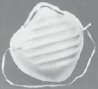
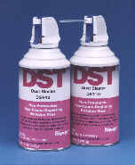
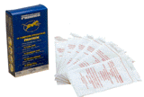
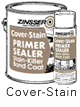
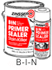
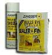
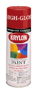
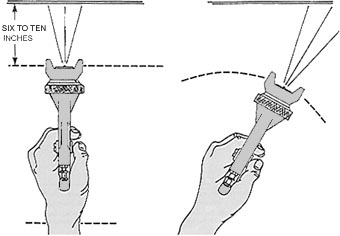

Spray Painting
| FINISHING |
|
Paint Prep. Spray Painting Applying Decals Monokote Making Decals |
Finishing Up!
This article is about getting the best possible paint job using a spray
can. First, make sure you have everything you need before you start and read
the Paint Prep. article.
Particle Masks

This is an essential if you want to live a long time and chase lots of rockets.
Dusting Materials

Hopefully the rocket is clean, free from dust and grease. A blow gun or can of air is nice to get rid of the dust from the nooks and crannies. Dusting should be done before priming and after sanding of the primer prior to finishing.
Once it is well dusted, run a tack rag over the entire airframe, NC and fin can just to pick up any stray debris.

Jigging Materials, A proper place to spray the part, A proper place to dry the painted part
Are all necessary at this point. See "Starting to Finish" for more details
Primers and Paints
This details the use of spray cans for priming and painting. While other systems are available to the rocketeer like airbrushes, conventional guns, and HVLP air or turbine systems, most of us will use rattle cans to paint their beauties.
A good rattlecan is like the Holy Grail of painting. Some prefer Krylon, some go for Rustoleum, some get their materials from Wal-Mart in whatever happens to be on sale at the moment.
When choosing a good spray can the essentials are:
- Type of Resin and Vehicle
- Availability in the correct color
- Final Appearance
- Drying Time
- Ease of Use
Type of Resin and Vehicle is important because it often dictates how quickly additional coats can be installed. One brand may melt, wrinkle and lift another brand so read the labels and make notes, mental or otherwise. It also indicates the quality of finish that can be expected, the ultimate durability of the finish coat, the odor, and the ease of use. Always try and test on a scrap or on a masked area of the rocket.
Availability is pretty self-explanatory.
Final Appearance is the look and feel of the material once installed. Some finishes look cheap and 2 dimensional while some look lustrous with an inner depth. Testing by spraying a couple of samples is the easiest way to determine this. (though there are factors like "pigment volume concentration" and the type and quality of resins involved that can be used to determine finish before application)
Drying time is important as this determines when the part is dust-free and unlikely to pick up stray contamination that might be floating around. Always test for dryness by touching an area that has been masked and not the part itself. Drying time also determines how quickly the part can be repainted and how long it will hold a wet edge. Repainting is best done in rapid succession, that is the part is painted and repainted until the depth of color is achieved, all in one session. Waiting an hour or two between coats can often have disastrous effects and itís best to wait weeks before installing additional finish coats.
Ease of use is merely that. Some products spray better than others! Cheap nozzles, coarsely ground pigments and solids, low internal pressure, solvent type all make for a good spraying experience or a poor one. This can also vary from color to color within a manufacturers spectrum. Experimentation is the only way to determine all these factors.
Primers - Special Considerations
The above factors are applicable to both primers and finishes though primers have a couple of additional requirements. Many times a good paint job is a result of superior priming and preparation. If the primer looks lousy there is no way the rocket is going to look any better. Not only must a primer exhibit the previously mentioned characteristics of spray paints but also:
- Compatibility
- Adhesion
- Opacity
- Build
- Ease of Sanding
- Whiteness
Compatibility is first and foremost. It has to work under
subsequent finish coats and on the part you
are coating. This can be determined if you know the components
of the primer and finish or by
experimenting. Make sure that the primer won't damage the part and
be absolutely positive that the
finish will not lift, soften or wrinkle the primer.
Adhesion is how the primer adheres to the part or parts. A primer might stick like crazy to paper but will fall off G10 or plastic if you look at it funny. This can only be determined through experimentation. The general test for adhesion is to prime and allow a test piece to dry. Scratch an "X" into the surface of the part and lay a piece of masking tape over the X. Burnish the tape into the surface well with your thumbnail, then pull the tape off. If smaller bits of primer come loose on the tape, then you have a problem and a different primer must be chosen.
Opacity is how completely covered the part becomes with one application of primer. Generally, the more opaque the finish, the faster the job is done. It is a function of pigments and solids, often a primer will use cheap pigments like talc or silica where the more expensive finishes use titanium dioxide. The higher the grade of pigments, the greater the opacity.
Build is the rate at which the solids stack up on top of each other with every pass of the spraycan. To fill voids, pinholes, creases, sanding marks a primer has to fill or build rapidly. The more solids by volume the greater the rate of build.
Ease of Sanding is the rate at which the primer sands off the rocket. A good primer should powder up and sand off rapidly without clogging the sandpaper. This is often difficult to find in a spray primer as they generally are not intended to be sanded, merely sprayed on then sprayed over with a finish.
Absolute Whiteness is the best bet for this type of spray primer. Using a gray or red primer doesnít make much sense to me since most colors generally look the best when applied over a vivid white base. This is a personal opinion, of course. Attempting to paint yellow, red, light colors, or fluorescents over any color besides white is often an exercise in futility. The darker colors and black cover so well on their own it doesnít make sense to use a colored primer. Same thing holds true for metallics, they generally cover so well in one or two applications that the white primer issue is moot.
My favorite is a product manufactured by Zynolite called "Stain Killer". It exhibits all the characteristics I've outlined above and is relatively inexpensive as well. CoverStain by Zinsser is pretty good too but not as good as the Zynolite product. Peter Alway suggests Dutch Boy flat white as a primer, either he has stock in the company or a 10 year supply of it. Some swear by KilZ, some insist on gray automotive primer, some use red oxide and struggle with recoating. Look for the Zynolite "Stain Killer" though, you'll be very pleased. Zynolite is an ITC company.

Pigmented shellac primers are okay but don't sand very well, B-I-N by Zinsser is a good example of this. They spray out of the can very fast though, be careful!

Clear shellacs make an excellent barrier coat if you find your finish is wrinkling the primer or previous coats of paint. The shellac prevents the finish coat solvents from attacking the coats underneath. Often times when sanding, cutting the film allows solvent to sneak between the dried film on the top and the uncured film underneath. At these minute cut lines, you will often see lines of wrinkles spreading out into the film. This means often means trouble.

Waterborne primers are generally difficult to sand and runny.
So what is the best spray can paint for finishing?
Sheen is an important starting point. A high gloss will show all the defects a rocket has. A lower gloss, generally called a "Satin" or "Eggshell" finish will hide a lot of mistakes while still giving a nice look. Flat should be reserved for scale or military rockets, or for vehicles that are total beaters flown only in hopes they might be lost.
For whites and blacks I have found some good lacquer-base materials in spray cans. Lacquers are nice in that they dry extremely fast, available in gloss and satin. This stuff is great for scale rockets and missiles.
Some like Krylon:

Personally, I buy the store label from Orchard Supply and Hardware or OSH. They may be available on the east coast but I donít know, itís owned by Sears. Inexpensive, great finish, fast drying time, lots of colors but your mileage may vary.
In other words, there is no best spray can paint for finishing. Experimentation on your part will be the major determining factor.
Technique
The best and most expensive can of spray paint will result in the absolute worst finish if the paint is not applied properly. Take care that the cans are warm, the paint is well shaken, and the nozzle sprays in an even pattern. Salvage good nozzles from dead spray cans and store them for later use.
This assumes that the part you are painting is jigged and ready to go, you have adequate protection for overspray, you have a light handy to sidelight your work and you have a place to put the part once painted. If not, see "Starting to Finish".
Test the spray can on a piece of paper taped to the wall, check the pattern. Discard the nozzle or soak if it doesnít look right. See how the paint lays down once sprayed. Wait a bit and see if it runs, spray back over it once itís tacked up a bit and see how the overspray lines react to the painted surface. This will tell you how you have to proceed to get the best looking job.
Holding the spray can

Hold like
This
Not like This
Pretend this is a spray can rather than a spray gun, I couldn't steal a good spray can graphic off the net anywhere! Try to hold it as perpendicular to the part as possible. Also, remember to spray away from your work, the material you've just laid down, as you paint. This involves pointing the can slightly off perpendicular and away from the fresh paint. If the can or gun is pointed back into the work then dry spray or overspray will settle onto the painted surface causing it to look chalky, sandy or fuzzy.
This first pass is called a "tack coat". The purpose is not to cover the whole airframe, rather to get about 50% coverage on the part, then allow it to tack up. This allows subsequent coats of paint something to hang onto.
Starting with the aft end, spray the motor mount and the trailing edges of the fins.
Next spray the tip chord and leading edge of the fins.
Holding the rocket from the aft end, point the forward end down and spray the face of all the fins, rotating the airframe as you go.
Spray the area between the fins, rotating the airframe, pointing the nozzle away from the finished fins and towards the nose cone end of the rocket.
Spray the airframe, again pointing the nozzle towards the NC rotating the airframe as you go. Work up the airframe until you are at the nosecone end. Allow this tack coat time to partially dry, test for dryness by touching a masked portion of the rocket.
While you are waiting for it to dry, put a tack coat on the nosecone. Remember, if you paint your nosecone black, youíre asking for trouble when it gets hot. It wonít come off when the ejection charge blows since the summer sun has expanded it within the airframe! Trust me on this one. Allow the nosecone to tack up.
Go back to the airframe and repeat the above steps. If the paint starts to look funny, consult the troubleshooting table below and take the steps necessary.
If everything looks okeedokee, repeat the steps until you have complete coverage and you are satisfied with the appearance. If you try to cover up imperfections in one application, "loading up the paint", you will often be rewarded with a sag or run. Itís much better to do numerous applications of light coats of paint, as youíve often read on the label of every single can ever sold. Itís true.
If you spend lots of time turning the cans upside-down to clear the paint from the nozzle put the paint clogged nozzles onto a can of GumOut carb cleaner, allow to sit, then spray a little into a rag.Voila! a perfectly clean nozzle every time. Give it a shot! It works great and you don't loose all of the can's propellant.
Common Problems Experienced by RattleCan Artistes and Some Solutions
| Problem | Appearance | Cause | Solution |
| Fish Eyes | Looks like little "eyes" in the surface of the paint. | Grease | Clean the surface
before you paint with a wax and silicone remover!
If you discover them too late, sand and repaint the part. |
| Cloudiness or Blush | Looks like clouds in the paint film. | High humidity | Try to dry with
a hair dryer. If it doesn't work, strip and repaint in lower
humidity.
If you have the solvent that thins this particular coat of paint you can spray this over the surface to eliminate the cloudiness or "blush". This technique is called a "hot coat". Be careful, you can ruin the surface in a heartbeat! |
| Orange Peel | Looks like the surface of an orange. | Paint applied too thick or surface too warm | Make sure your
spray technique is good before spraying the part.
Eliminate mild orange peel using fine-grade rubbing compound. Severe orange peel requires wet-sanding with #600 sandpaper, rubbing compound and recoat. |
| Runs/Sags | Looks like a run or a sag. | Paint applied to thick or surface too cold | Always keep
an eye on the part until it has dried to a state of being dust
free.
When the paint is still wet, rotate the part rapidly and sometimes the run will blend in a bit better. Sometimes blowing on the run will make it go away, a can of compressed air (used for cleaning computers and cameras) might help. The run can be picked up using a loop of scotch tape. Gently touch the sticky side of the loop to the part and remove the run. Let the surface tack up, then spray the entire part. Allow run or sag to completely dry. Wet-sand with #400 or #600 sandpaper and repaint. |
| Wrinkling/ Lifting | Looks like the
surface of an orange, only lots worse. This is time for panic, go
ahead and do so.
"When in trouble or in doubt, run in circles, scream and shout." |
Didn't follow recoat window; Incompatible paints; Unclean surface, sanding of primer cut too deeply into the surface allowing finish coat solvents under primer film. | Sand to bare
surface and repaint following label directions.
You can fill the wrinkles with Elmers Finishing Wood Filler, sand, install a barrier coat, prime and repaint. |
| Chalky Finish | The part looks dry, fuzzy and dusty. | Sprayed paint too far from surface | Always maintain
a wet edge when spraying.
Spray away from the wet edge into the unpainted area. Sand with fine sandpaper and recoat with a heavier application at the recommended spray distance. |
Submitted by Bob Fortune